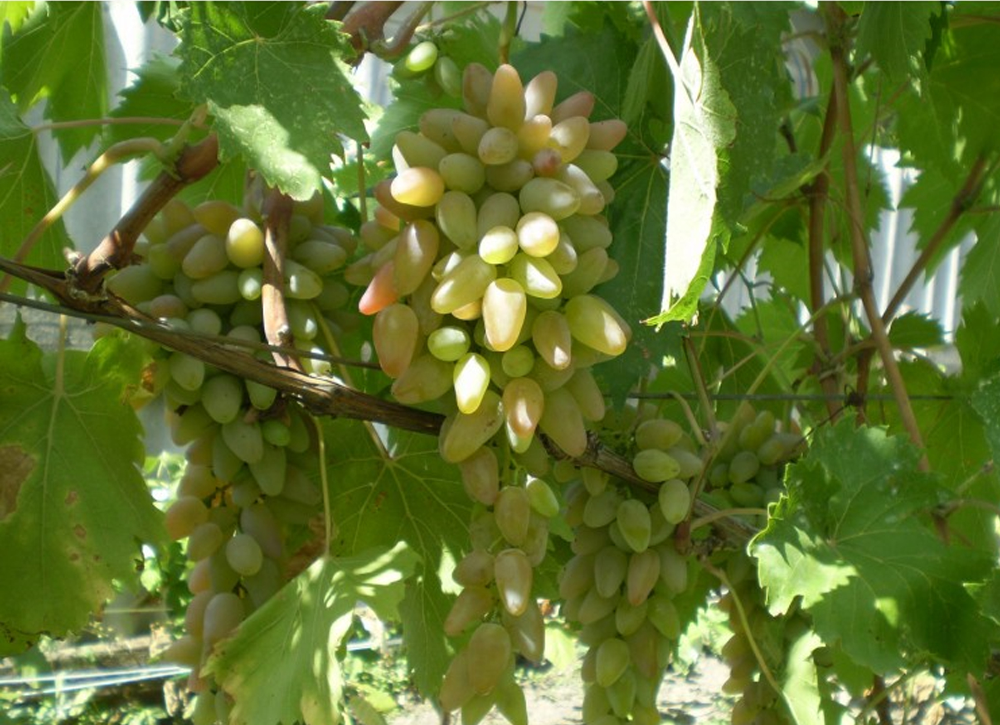
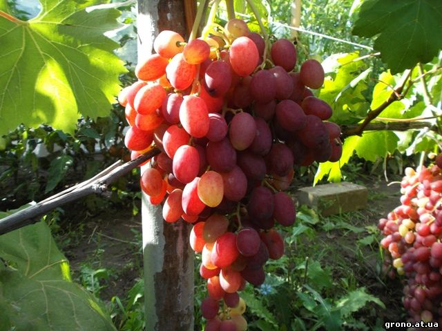
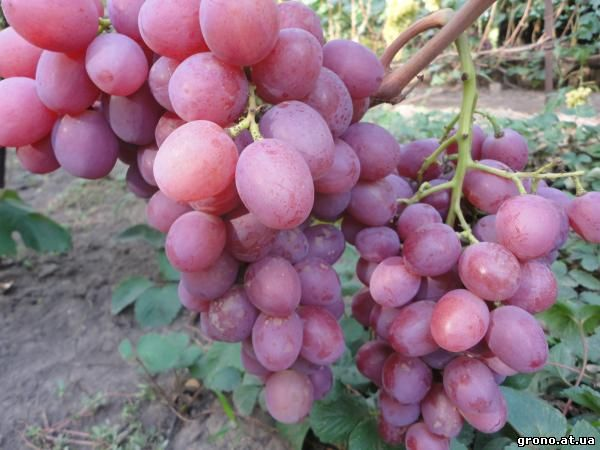

Aристократ А-А-1-1

Час дозрівання Аристократу А-А-1-1 ранній ( 110-120 днів). Сила росту кущів велика.
Квітка двостатева. Починає цвисти в перших числах червня, в деякі роки може бути незначне горошіння.
Грона великі, середня вага 700-1000 грам, деякі достигають до ваги 1200 грам, середньої плотності, коносної форми.
Мають дуже гарний товарний вигляд. Ягоди великі, середня вага 10 -15 грам ( 32х24 мм),
овальні, розового кольору, при повному дозріванні набуває фіолетового відтінку, має гармонійний смак.
Шкірка середньої товщини, при їді не відчувається. Колір мякоті світлий. Цукристість до 17-20%,
кислотність до 7-8 г/л. Процент дозрівання пагонів високий.
Витривалість до грибкових захворювань повишина, до мільдью 3.5 балів. Витримує морози до - 21 °С.
Анджеліка

Анжеліка нова столова форма винограду. Раннього часу дозрівання 100-105 днів. Квітка двостатева.
Грона великі, конічні, середньо рихлі , вага яких досягає 600-1000 грам. Ягоди великі і дуже великі 30-32х21-23мм ,
зові по зовнішньому вигляді нагадують к-ш Лучистий , маса ягоди 10-12 грам. Горошіння ягоди не спостерігається.
Мякоть хрустяща , гармонійного смаку, шкірка при їді не відчувається. Ягода має 1-2 зернятка, деколи 3-4.
Дуже висока цукронакопичуваність , осами майже не пошкоджується. Сорт показує стабільність в плодоношені і хороші
урожаї. Ягоди можкть довго зберігатися на кущах , не втрачаючи своїх товарних і смакових якостей.
Визрівання і укорінення пагонів хороша . Витривалість до грибкових захворювань мільдю і оідіуму 2.5 - 3.0 бала.
Морозостійкість до - 22 °С . Товарність і транспортабельність хороша.
Анюта

Анюта гібридна форма винограду силекції В.Н.Крайнов. Середньопізнього часу дозрівання.
Починає дозрівати в першій половині вересня .Кущі великої сили росту. Грона великі ,800- 1300 грам,
конічної форми, середньої плотності, високого товарного виду. Ягоди дуже великі, овальні, вага ягоди 10- 14 грам,
темно-розового кольору. Мякоть мясисто - сочна, шкірка плотна, на смак відчутний дуже легкий мускатний аромат.
Відрізняється високими урожаями, може витримувати перенавантаження урожаєм,
потребує нормування пагонами і гронами. Дозрівання пагонів хороше. Витривалість до грибкових захворювань
Мілдію і оідіумом 3.5-4 бала. Обовязково потрібно накривати кущі на зиму. Транспортабельність хороша.